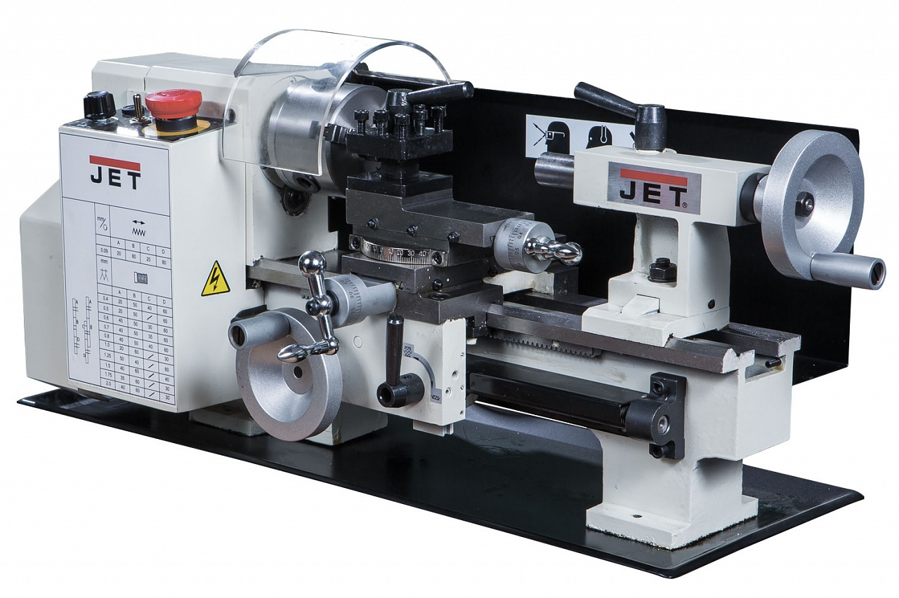
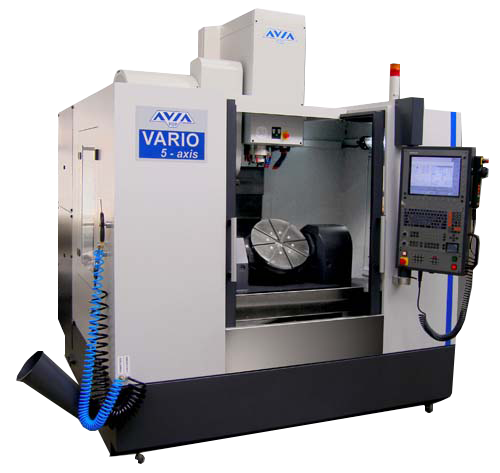

токарные-станок для обработки резанием (точением) заготовок из металлов, древесины и других материалов в
виде тел вращения.
одношпиндельные
многошпиндельные

фрезерные-станок для обоработки при помощи вращения инструмента
одношпиндельные
многошпиндельные

История
Считается, что история металлорежущих станков начинается с изобретения суппорта токарного станка. Около 1751 г.
французский инженер и изобретатель Жак де Вокансон создал станок со специальным устройством для фиксации резца, в
котором отсутствовало непосредственное влияние руки человека на формообразование поверхности.
По другим сведениям, конструкция первого в мире токарно-винторезного станка с механизированным суппортом и набором
сменных зубчатых колёс была разработана в 1738 году русским учёным А. К. Нартовым.